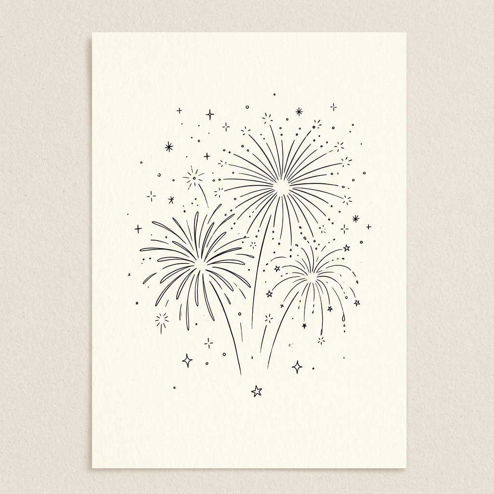

No hay catálogos aquí.
Hay criterio.
Crear es disfrutar.
-
01 — Inspiración
Buscad juntos objetos o experiencias que queráis en vuestra vida.
-
02 — Vuestra web
Montamos una página personalizada con vuestra historia y los regalos que habéis elegido.
-
03 — Compartir
Enviad el enlace a los invitados y disfrutad mientras vuestra nueva vida toma forma.
Regalar es fácil.
-
01 — Explorar
Navegan por la web y eligen el detalle que más les ilusione regalaros.
-
02 — Comprar y entregar
Van al enlace de la tienda sugerida y realizan la compra, enviándola directamente a la dirección de los novios o entregándola en persona.
-
03 — Reservar en la lista
Regresan aquí y marcan el regalo como "Comprado" para evitar que otro invitado lo repita.
La boda de María y Carlos.
Este sería el aspecto final del apartado de regalos. Limpio, minimalista y donde cada detalle importa. Interactúa con él para probar el sistema de reservas.
María Gómez y Carlos Ruiz
Calle de las Bodas de Plata 42, 3º Izda.
33001 Oviedo
Más allá de la lista.
Tres formas de trabajar conmigo, según lo que necesites.
Tu lista, curada.
Elaboramos juntas una lista que refleje vuestra forma de vivir. Marcas con criterio, artesanos reales y experiencias que de verdad merezca la pena regalar.

Asesoría de eventos online.
Sesión 1:1 para organizar cualquier tipo de evento — sin agobios, con intención. Trabajamos juntas la estética, los proveedores y los detalles que marcan la diferencia.
Antes de reservar, escríbeme con al menos 48 horas de antelación. Así llego preparada con inspiración e ideas adaptadas a tu evento.
 Newsletter
Newsletter
Ideas lentas para celebrar bonito.
Sitio de inspiración donde comparto marcas, lugares y planes dignos de tu lista de bodas. Sin prisas, en tu buzón.
Leer en Substack ↗Soy Carmen.
No me gusta usar la palabra apasionada, pero aún no he encontrado una mejor.
Me encanta buscar y descubrir marcas, lugares y planes bonitos. Leer revistas es uno de mis hobbies favoritos, al igual que hacer scroll en Instagram en cuentas que me inspiran. Algunos pensarán que es perder el tiempo, pero estoy segura de que tú, que estás aquí, me entiendes.
Estudié Turismo y los primeros años de mi carrera los dediqué a la gestión de hoteles. Después, tras varios másteres y cursos, supe a qué quería dedicarme de verdad: la planificación y gestión de eventos.
Antes organizaba eventos en un gran hotel en Madrid. Ahora organizo cumpleaños infantiles —los de mis hijos—. Pero nunca es tarde para retomar aquello que de verdad te apasiona.
Hablemos ↗